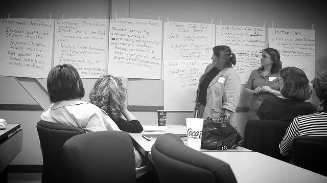
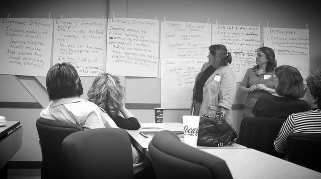

PUBS & PRESOS
My research interests lie at the intersection of technology, education, and civic engagement. See the links below for information on my past & upcoming presentations, publications, and research projects.
LIBRARIAN BY TRADE, GEEK BY CHOICE, ARTIST BY NATURE.
My research interests lie at the intersection of technology, education, and civic engagement. See the links below for information on my past & upcoming presentations, publications, and research projects.
